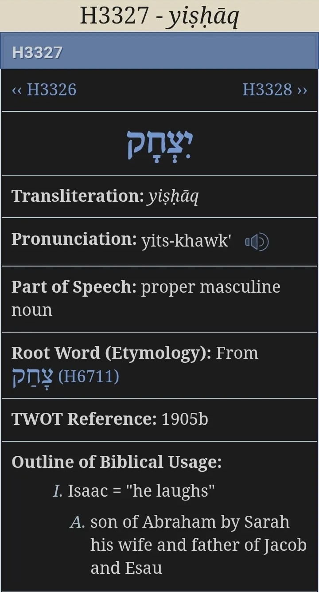

About This Site
This is a comprehensive Bible reference and interpretation site that explores Neville Goddard’s teachings in a structured and accessible way, with direct references to the Bible, which itself reveals the Law of Assumption through its stories and symbolism.
When Neville spoke in his lectures, he always taught alongside the Bible because he was revealing what it had already shown—its psychological principles and processes. Today, many fail to recognise that the Bible is not just a reference but the very revelation Neville was making accessible.
Practical notes
Clicking on Bible verse references within posts will open a pop-up showing the actual Bible passage from Blue Letter Bible. Hebrew name meanings can be found using tool apps like Blue Letter Bible, which also provide many translations and interlinear insights.

About This Approach
The Bible is often approached as history or moral instruction, which can make it feel distant, prescriptive, or inaccessible. Many readers sense something deeper in the text but struggle to reconcile it with traditional teaching.
This site explores the meaning of the Bible text itself as a psychological and symbolic record of the mind in action, building on Neville Goddard’s insight that the Bible describes inner states, identity, imagination, and consciousness rather than historical events.
Everything on this site is rooted in the text itself. The Linguistics Key was constructed by following narrative threads in Genesis and the Bible as a whole, so that each insight is grounded in the unfolding story.
Characters in the Bible are not people. They are states of being. Narratives show how identity is assumed, how belief is impressed, and how change occurs. Observing these patterns in Scripture allows readers to see the same mechanisms at work within their own consciousness, offering clarity, insight, and practical guidance for conscious living.
Engaging with the Bible in this way involves connecting with, and observing, how your mind operates. Old assumptions and habitual patterns may arise, yet each insight opens the door to freedom, joy, and fulfilment. The Bible’s promise of transformation and alignment with your true self serves as both the incentive and the reward. Awareness itself is the creative power—the capacity to assume, transform, and become.
 After intense study and careful observation of patterns in Scripture, developing these insights, a Bible translation key was designed. The key allows readers to trace the symbolic and psychological principles for themselves, making the connections accessible and practical without relying on doctrine or external interpretation.
After intense study and careful observation of patterns in Scripture, developing these insights, a Bible translation key was designed. The key allows readers to trace the symbolic and psychological principles for themselves, making the connections accessible and practical without relying on doctrine or external interpretation.
This site documents careful study of Scripture alongside Neville Goddard’s work, showing that the text is internally cohesive, repetitive by design, and focused on the mechanics of the human mind. Its symbolism is functional rather than abstract, revealing how perception forms, identity stabilises, and change occurs.
This is a place for those who want to move past the traditional conflicts. If you have sensed truth in the Bible but struggled with traditional presentation, this approach provides clarity, practical guidance, and a path to internal understanding.
Welcome to The Way.
- Start here with Genesis Foundational Principles
- Visit the Author Page here
- More Content is available in the r/BibleNevilleGoddard Subreddit
New
 A New illustrative site featuring images based on Neville Goddard's Revelation of the Bible can be viewed at
hnnh.studio
A New illustrative site featuring images based on Neville Goddard's Revelation of the Bible can be viewed at
hnnh.studio
To get in touch, please leave a comment below.